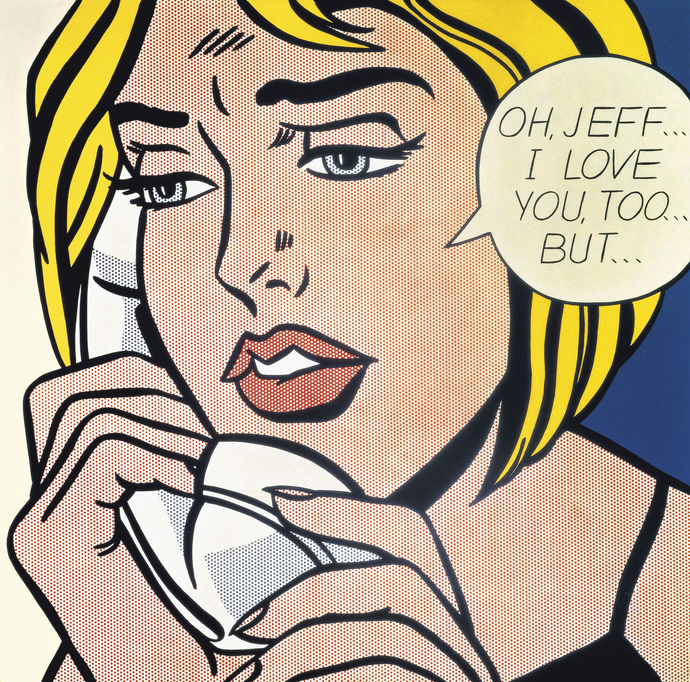

Oh, Jeff
Dimensions: 121.9 cm × 121.9 cm
Year: 1964
Movement: Pop Art
After 1963, Lichtenstein's comics-based women "...look hard, crisp, brittle, and uniformly modish in appearance,
as if they all came out of the same pot of makeup."
This particular example is one of several that is cropped so closely that the hair flows beyond the edges of the canvas.
This was painted at the apex of Lichtenstein's use of enlarged dots, cropping and magnification of the original source.